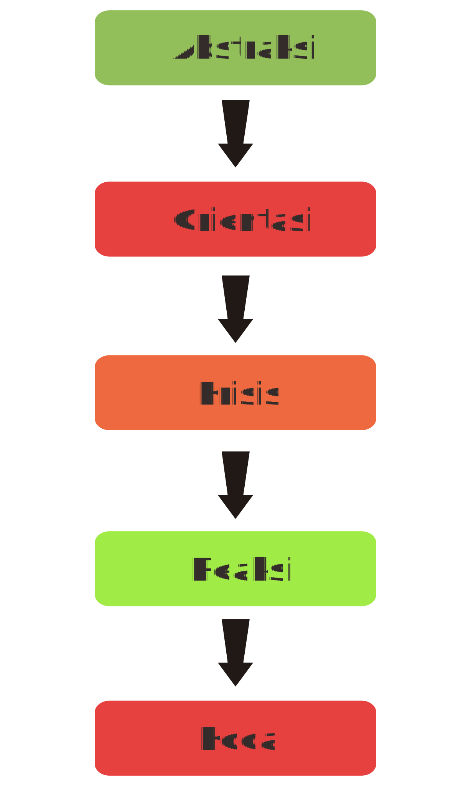

Teks Anekdot.
Bergerak untuk bangkit

Apa Itu Teks Anekdot?
Teks Anekdot adalah cerita singkat yang didalamnya mengandung unsur lucu dan mempunyai maksud untuk melakukan kritikan
Apa Saja Struktur
Teks Anekdot Itu?

-
1
Abstraksi
Berada di awal paragraf dengan fungsi untuk menggambarkan mengenai teks yang disampaikan secara umum agar pembaca dapat membayangkan maksud teks tersebut -
2
Orientasi
Orientasi merupakan awal kejadian pada cerita yang menjelaskan latar belakang mengapa peristiwa utama dalam cerita dapat terjadi. -
3
Krisis
Krisis merupakan bagian yang menjelaskan mengenai pokok masalah utama dengan warna unik juga tidak biasa -
4
Reaksi
Reaksi adalah bagian pelengkap berupa penyelasaian masalah yang disampaikan dengan cara unik juga berbeda -
5
Koda
Struktur teks anekdot yang terakhir ialah koda. Koda merupakan bagian yang menutup cerita dalam teks tersebut
Apa Saja Kaidah Kebahasaan?
Teks Anekdot
Semangat mengahadapi New Normal? Boleh kok, asal tetap patuhi protokol kesehatan ya! Seperti yang kita ketahui penerapan New Normal membuat kita menjadi lebih longgar untuk beraktivitas di luar rumah, namun kita juga harus ingat bahwa saat ini pandemi masih berlangsung. Kita turut andil dalam menekan penyebaran virus Covid-19 ini, maka dari itu patuhi protokol kesehatan sebagai bentuk cinta kita terhadap tanah air. Terapkan protokol berikut jika masih ingin selamat dari eliminasi alam ini:
Menggunakan kalimat langsung ataupun tidak langsung
Menggunakan nama tokoh orang ketiga tunggal

Menggunakan keterangan waktu
Hal ini sesuai dengan bentuk teks anekdot yang berupa cerita, disajikan secara kronologis atau mengikuti urutan waktu

Menggunakan kata kerja material
Yaitu kata yang menunjukkan suatu aktivitas, sesuai dengan para tokoh dan alur pada teks anekdot yang membentuk rangkaian peristiwa

Menggunakan konjungsi yang bermakna kronologis
Seperti: kemudian, akhirnya, lalu

Menggunakan konjungsi penerang atau penjelas
Seperti: bahwa, ialah, sebab